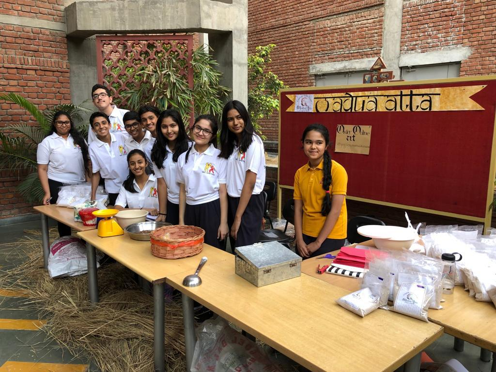
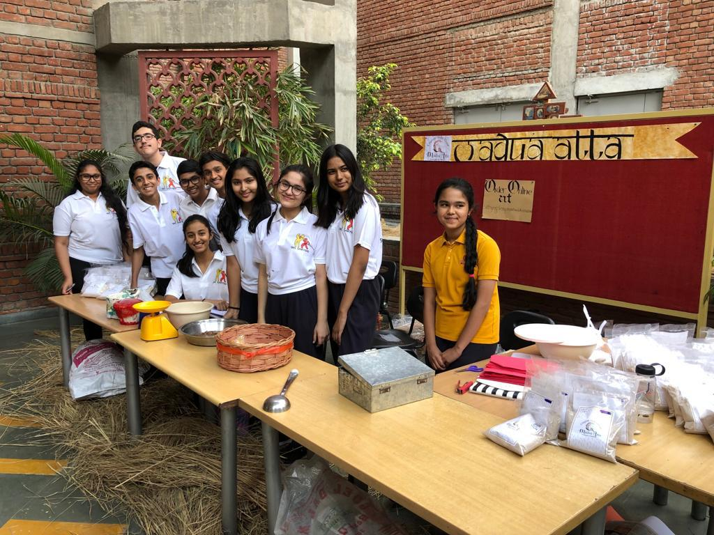

Journey of this Initiative
From the fields of Sahyog’s very own Kinsu & Dugadda, two small yet enterprising villages in Uttarakhand, we bring to you organic madua atta. Grown with natural fertilizers, untouched by chemicals, ground with environmentally friendly humble watermills, this madua is guaranteed to give you the most delicious and wholesome food.
About The Product
Madua Atta is the culmination of the hardwork of the villagers illustrated below through a chain of events by which it reaches you!
- Buying of seeds
- Growing of crop
- Harvesting of crop
- Cleaning and removing of husk of the madua
- Drying of the madua
- Grinding of the madua using a pan chakki (water mill at the stream)
- Buying of the atta by us
- Transporting the atta to school
- Packaging
- Selling at the stalls
Advantages of Using Madua Atta
- Reduces Obesity
- Controls Blood Pressure
- Reduces Constipation and facilitates Digestion
- Helps recover from Cold and heals Throat Pain
- Nourishes Skin, reduces Scars and erases Spots
- Helps in the development of Bones
- It is gluten free and has a higher content of protein, carbohydrates and other minerals in comparison to wheat
Recipes
One of the main reasons you must buy this product is that it is versatile in its use can be used to make rotis, panjeeri, dosas, cookies and sev.
For your convenience, we have provided the recipes for each below:
Madua Dosa
Ingredients:
- 1 cup millet flour
- 1/2 cup dried coconut
- 1/2 cup curd
- Oil, ghee, salt and water as required
Procedure:
1. Take the madua atta
in a bowl or pan. Add the dried coconut,
curd and salt and finally, water; mix well.
2. The batter should be slightly thin than a
regular dosa batter. Keep it covered for 30
minutes. On a medium hot tava or griddle,
pour the batter with a help of a ladle and
spread it slowly.
3. Spread some oil/butter/ghee on top. Flip and cook the other side normally.
4. Serve the millet dosa with any vegetable dish, sambar, dal or any chutney.
Panjeeri
Ingredients:
- 0.5 kg madua
- 100 grams ghee
- 3-4 cardamoms
- 1 cup granulated sugar
- Dry fruits (optional)
Procedure:
1. Mix the madua and the ghee together
2. Place it on the gas and heat it till it turns pink
3. Allow it to cool and add the granulated sugar and cardamom
4. Dry fruits can also be added (optional)
Cookies
Ingredients:
- 250g madua
- 75g atta or maida
- 1.25 cup butter
- 1.5 cup brown sugar
- 1 teaspoon milk
Procedure:
1. Sieve through the madua and atta/maida together
2. Add in the sugar and mix well
3. Keep the butter soft but not melted and add it in to the dry ingredients by hands
4. Knead then all together in a bowl to form a dough
5. Mix in the milk to make its consistency smoother
6. Let the dough rest for 15-20 min in the fridge
7. Preheat your oven to 150°F for 15 min
8. Shape your dough into medium sized balls and place into the oven for about 10-15 min at 250°F
Sev
Ingredients:
- 500g Madua Atta
- 1/4 cup rice flour
- Red chili powder (as per your need)
- Salt to taste
- Asofoetida (a pinch)
- 1 tbsp melted ghee / clarified butter (or) hot oil
- Warm water to knead
Procedure:
1. Dry roast the atta till nice aroma comes and remove from the heat.
2. Cool and sieve the flour.
3. Combine flour with rice flour, chili powder, asofoetida and salt in a wide mixing bowl.
4. Add enough warm water and knead to smooth dough. Sprinkle 1 tbsp ghee or hot oil and knead again. Keep the dough aside.
5. Meanwhile, heat oil in a pan or kadai on low flame. Take murukku press and fill it with portion of dough. To check oil, drop a pinch of dough in oil and it should come up immediately. Change the flame to low-medium and press the murukku press directly over oil in circular motion. Don’t over-crowd it. Prepare sev in batches and remove from the oil carefully.
How Can I Buy?
A stall selling Madua Atta is going to be set up at SBS on two PTM dates - 20th March and 12th April. But, if for some reason, you aren't able to make it there, we have also created an option for you to order any amount of madua atta or its delicious products from our website, right here. All you need to do is choose one of the options below and place your first order!
Order Form
 
